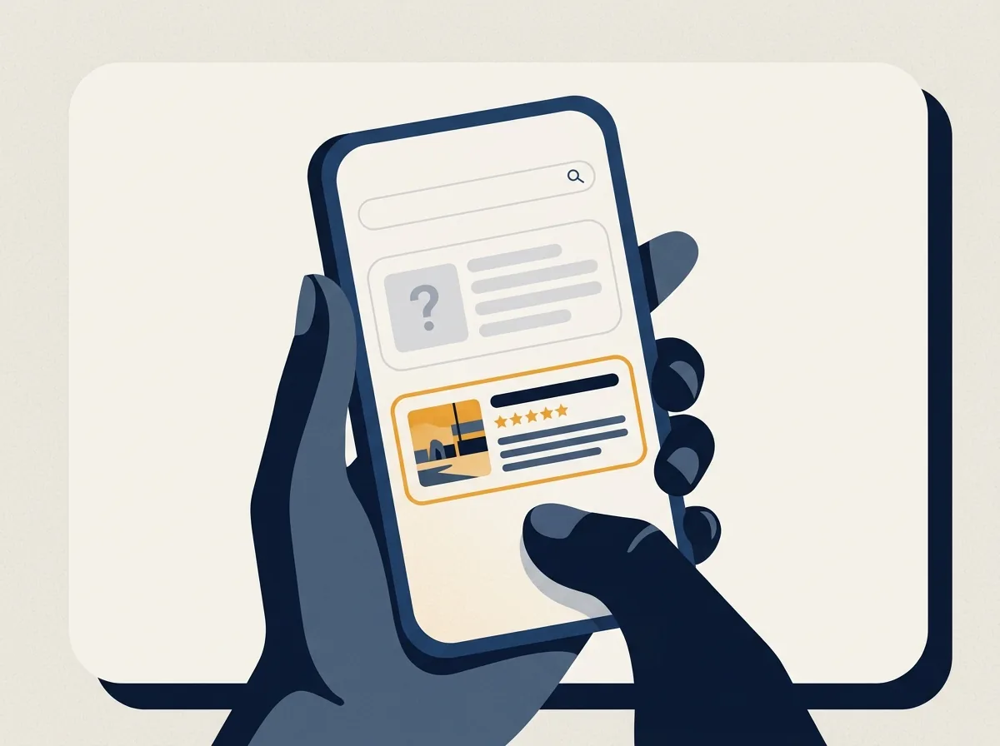
Alguém te indica. Antes de ligar, o cliente pesquisa seu nome no Google.
Se ele encontra pouco ou nada, a confiança que a indicação trouxe começa a esfriar.
Cores, formas, imagens e textos bem combinados fazem um site trabalhar como um vendedor: apresenta sua empresa, mostra o que você oferece e leva o cliente a chamar você.
Quero conversarVeja como isso funcionaConversa sem compromisso, pelo WhatsApp.

Se ele encontra pouco ou nada, a confiança que a indicação trouxe começa a esfriar.
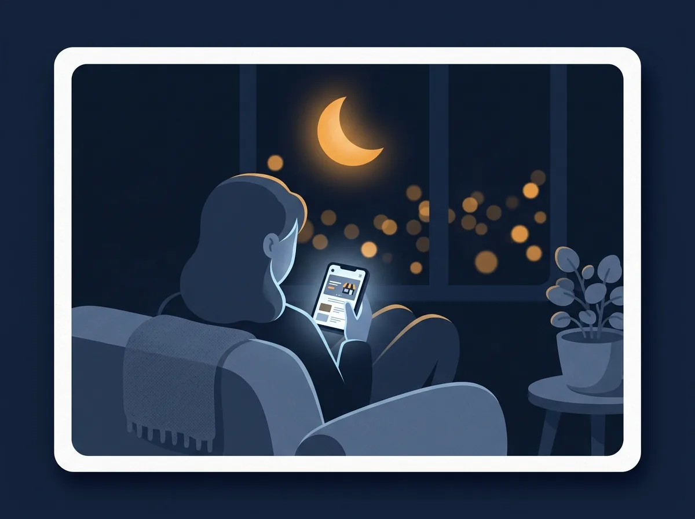
Seu telefone está desligado. O concorrente que tem site está ali, explicando o serviço dele.
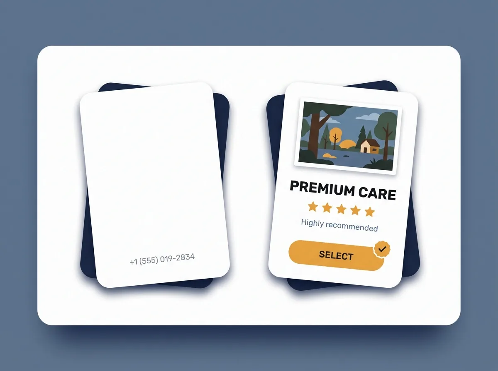
Quem parece mais sério leva a ligação.
Seu trabalho pode ser excelente. Mas o cliente só escolhe o que consegue enxergar.
Você sabe como é ter um bom vendedor. Ele apresenta a empresa, explica o produto, responde as dúvidas mais comuns e convida o cliente a fechar.
Um site bem construído faz o mesmo. Só que 24 horas por dia, sem folga, sem esquecer de dizer o que importa e sempre mostrando sua empresa do melhor jeito.
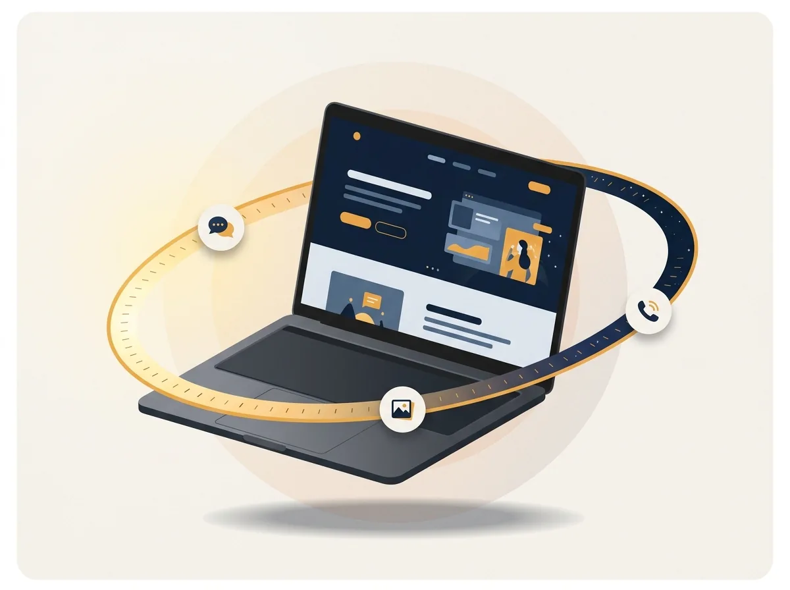
Este é um site de exemplo, de uma empresa de manutenção industrial. Toque nos pontos dourados e veja o que cada parte faz pelo negócio.
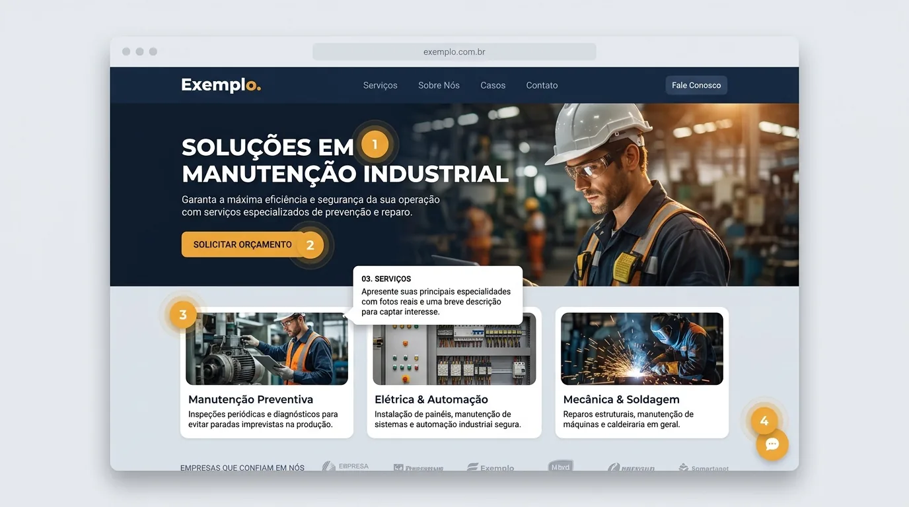
Site de exemplo, de empresa fictícia.
O mesmo raciocínio vale para o seu negócio. Eu descubro o que dizer e como mostrar. Você não precisa saber isso.
Em um site completo entram também o tempo de empresa, os clientes atendidos e os trabalhos feitos. É o que responde à pergunta do cliente: "será que posso confiar?".
Cada negócio vende de um jeito. Veja alguns caminhos:
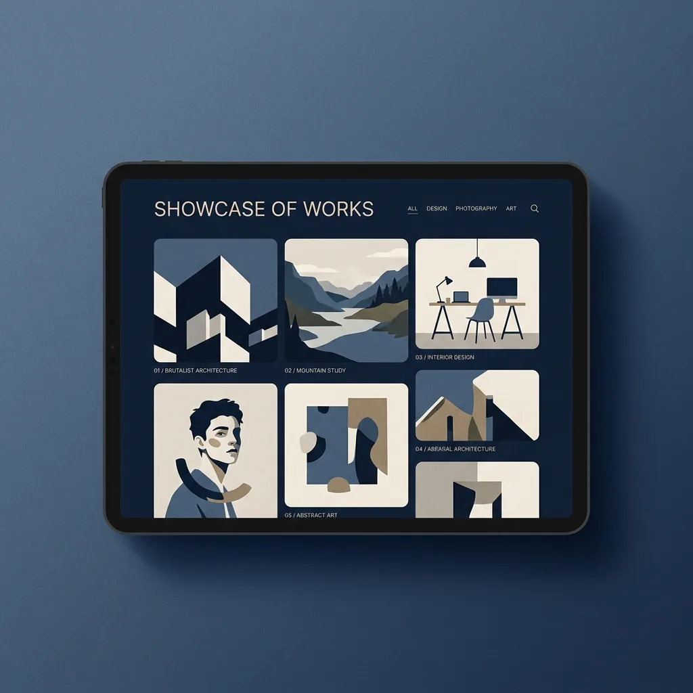
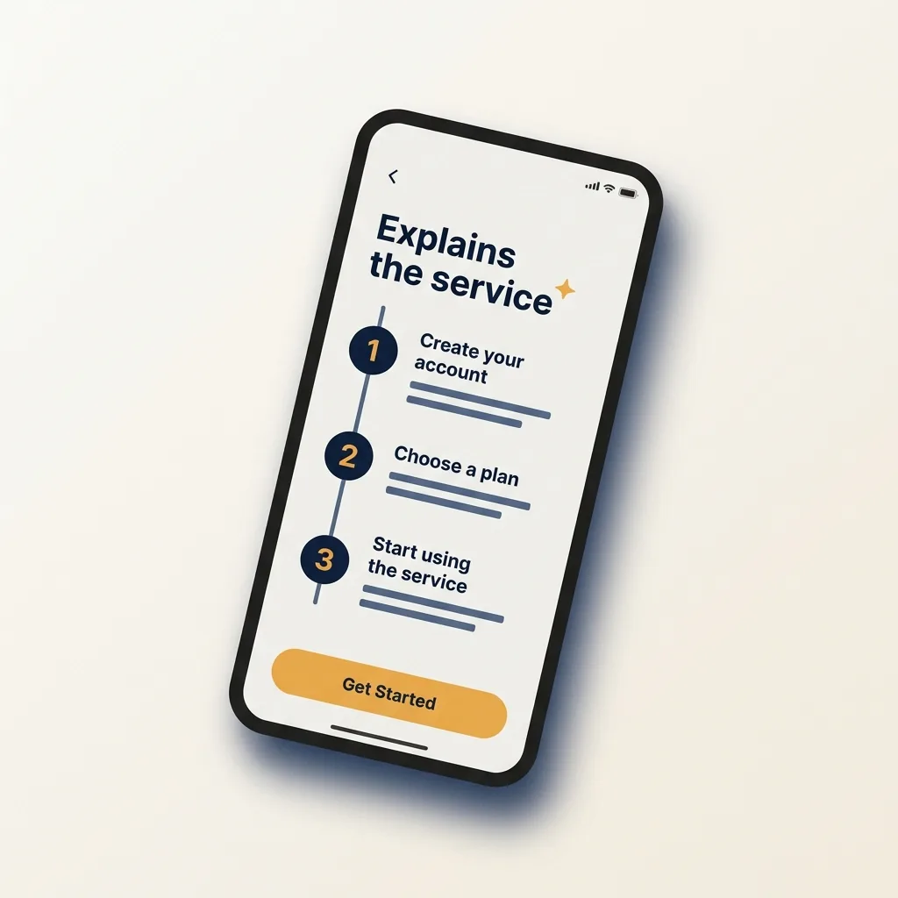
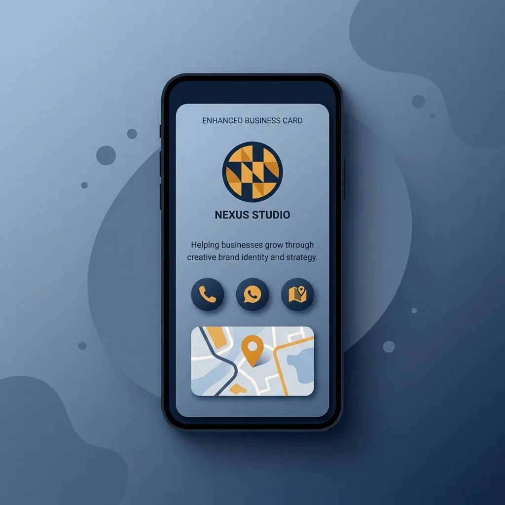
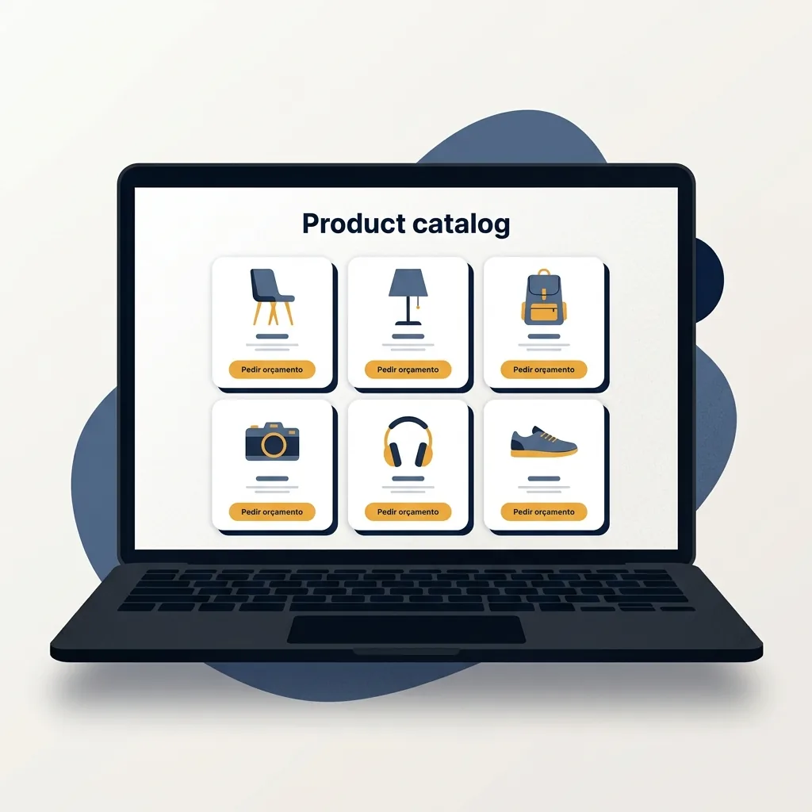
Não sabe qual é o seu? É normal. Descobrimos juntos na primeira conversa.
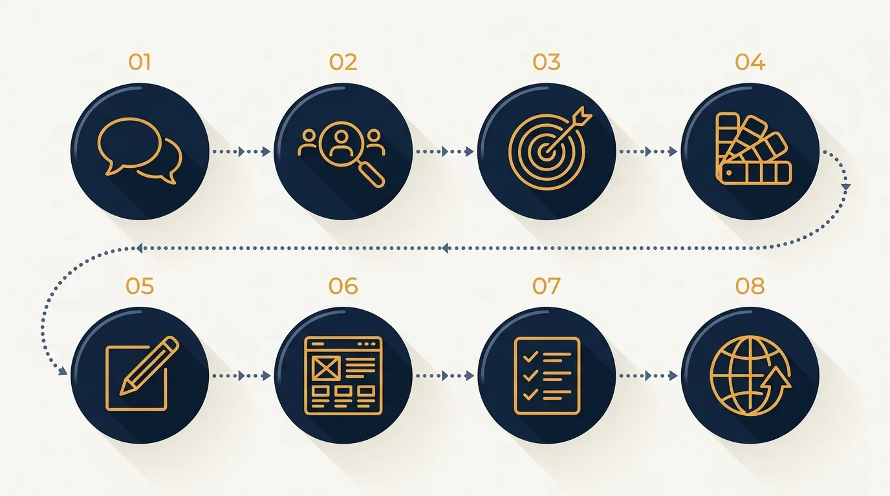
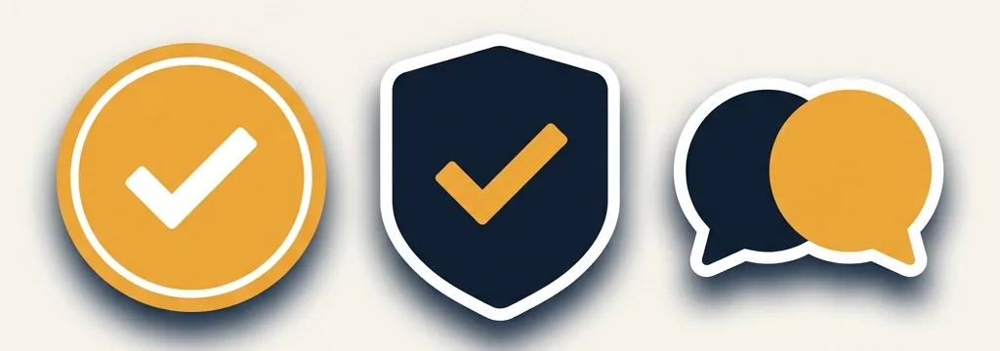
Você aprova cada etapa.
Nada vai ao ar sem o seu OK.
A primeira conversa não obriga a nada.
Não precisa. Eu explico em português simples, e você só decide.
Depende do tipo de site. Na primeira conversa eu passo o prazo certo para o seu caso.
Você vê a primeira versão antes de publicar e pede os ajustes.
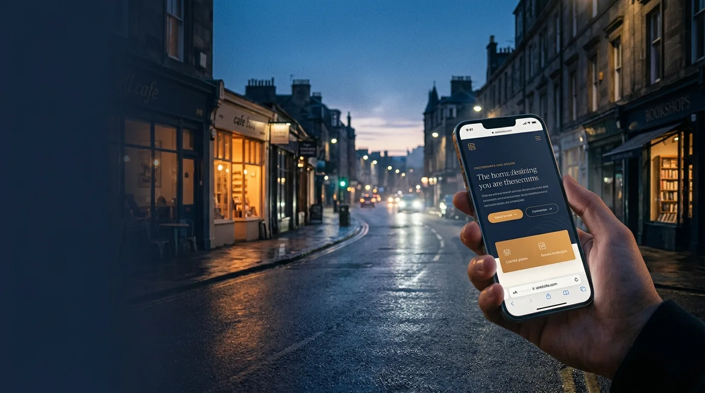
Vamos conversar sobre como o seu negócio pode aparecer do jeito certo?
Chamar no WhatsApp